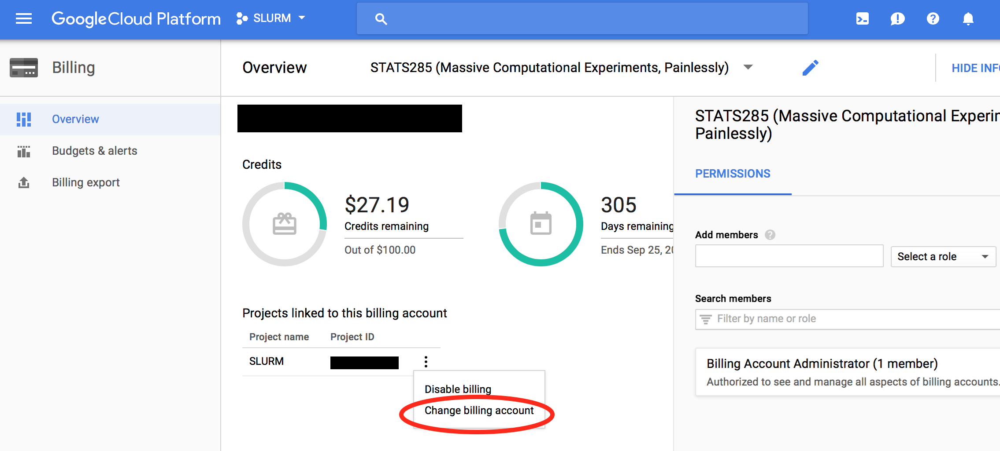

Frequently Asked Questions (FAQ)
-
I have set up my cluster, but there is no GPU accelators that I can use.
Perhaps you did not edit your GCE qouta for GPU. You need to request an increase in GPU quota as stated in item 9 of Setup GCE
-
It is taking more than 30 min to build a cluster
Have you edited your GPU quota before you runelasticluster -vvv start gceas stated above in item 2? -
I have received two credits from Google Education grants that created two billing accounts. How can I use both for my project?
You can change your project’s billing account by going to Billing Page. You can associate a different billing account to your project as shown below.